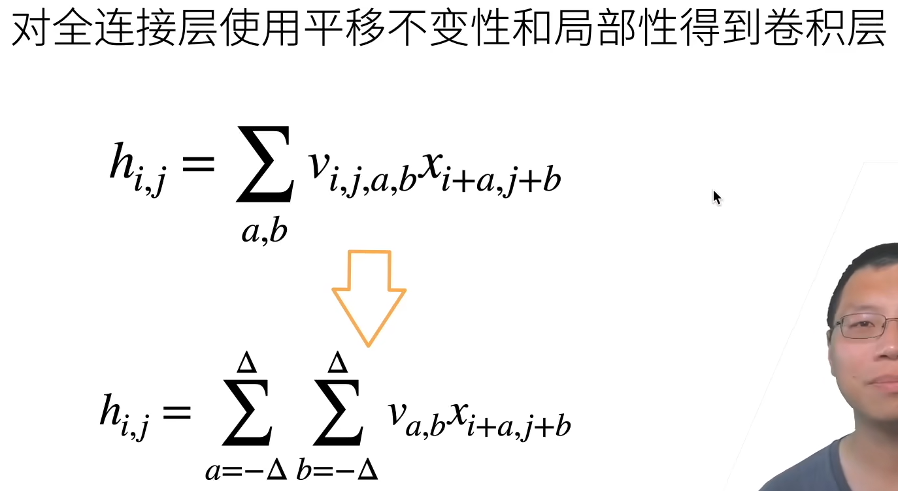
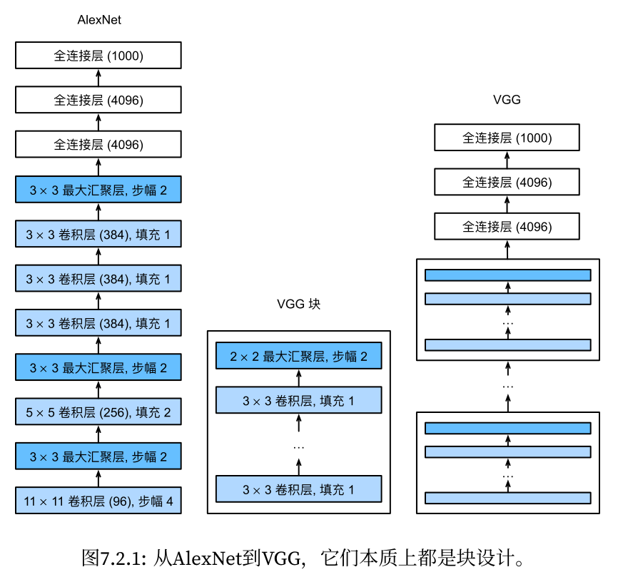
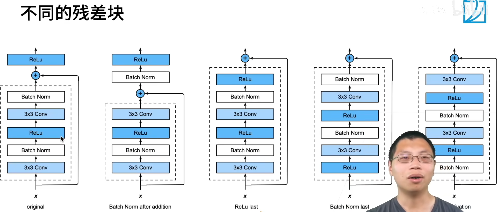

《动手学深度学习》部分笔记
李沐老师b站的课程动手学深度学习v2以及书，根据个人情况，选择性地做了一些笔记。
基础
权重衰退
正则化（Regularization） 是一种防止模型过拟合（Overfitting） 的核心技术。它的核心思想是通过对模型施加某种约束，限制其复杂度，从而提升在未知数据（测试集） 上的泛化能力。 通常惩罚项是权重参数的L1/L2范数。
对于若某一层的操作是 逐元素操作（例如激活函数 ReLU、Sigmoid），则每个输出元素仅依赖于对应的输入元素。向量对向量的导数是矩阵， 当对向量进行逐元素操作时，求导得到的Jacobian矩阵是对角矩阵。这是因为每个输出元素仅依赖于对应的输入元素，导致非对角线上的偏导数为零。
eval()的作用
切换模型模式：将模型及其所有子模块（如Dropout、BatchNorm等）设置为评估模式。
影响特定层的行为：
Dropout层：在训练模式下会随机丢弃神经元，但在评估模式下会关闭丢弃功能，使用全部神经元进行前向传播。
BatchNorm层：在训练时基于当前批次计算均值和方差，而评估时使用训练阶段累积的全局移动平均统计量，确保结果稳定。
卷积

1*1的卷积层，不识别空间信息，只融合通道。
批归一化bn
批量规范化应用于单个可选层（也可以应用到所有层），其原理如下：在每次训练迭代中，我们首先规范化输入，即通过减去其均值并除以其标准差，其中两者均基于当前小批量处理。接下来，我们应用比例系数和比例偏移。
方差估计值中添加一个小的常量ϵ > 0，以确保我们永远不会尝试除以零
训练模式中用小批量的均值和方差不断调整，预测模式中使用全局的均值和方差
理论上尚未明确，bn通过加入一些噪声，通常会导致更快的训练和较少的过拟合
实现：
1 | import torch |
冲量法：用平滑过的梯度对权重更新，会考虑前几个步骤的梯度，权重可调
经典卷积神经网络
LeNet
结构：
实现：
1 | import torch |
为了将卷积块的输出传递给稠密块，我们必须在小批量中展平每个样本。换言之，我们将这个四维输入转换成全连接层所期望的二维输入。这里的二维表示的第一个维度索引小批量中的样本，第二个维度给出每个样本的平面向量表示。
AlexNet
更深更大的lenet，relu、最大池化、dropout
实现：
1 | import torch |
Vgg
更深更大的alexnet

每个vgg块中，卷积层的数量为可设置的超参数
实现（以vgg11为例）：
1 | import torch |
变体：
增加的层以粗体标出，LRN（局部响应归一化）效果不好因此大多数模型都没有采用
NiN
不使用全连接层，用两个1*1的卷积层起到全连接的作用，最后用全局平均池化层输出
好处是减少了模型参数量，但实践中有时会增加模型训练的时间
实现：
1 | import torch |
GoogLeNet
使用不同大小的卷积核组合
Inception块的通道数分配之比是通过大量的实验得来的，可解释性不强
实现（V1）：
1 | import torch |
后续有陆续迭代版本
ResNet
如果卷积层改变了通道数，通过1*1的卷积层调整输入通道数以相加

引入梯度捷径，避免因为连续的小数相乘导致梯度消失，因而能训练层次很深的网络
实现：
第一个模块的通道数同输入通道数一致。 由于之前已经使用了步幅为2的最大汇聚层，所以无须减小高和宽。 之后的每个模块在第一个残差块里将上一个模块的通道数翻倍，并将高和宽减半。
1 | import torch |
DenseNet
ResNet和DenseNet的关键区别在于，DenseNet输出是连接而不是如ResNet的简单相加。因此，在应用越来越复杂的函数序列后，我们执行从x到其展开式的映射：
x → [x, f1(x), f2([x, f1(x)]), f3([x, f1(x), f2([x, f1(x)])]), . . .]
由于每个稠密块都会带来通道数的增加，使用过多则会过于复杂化模型。 而过渡层可以用来控制模型复杂度。 它通过1×1卷积层来减小通道数，并使用步幅为2的平均汇聚层减半高和宽，从而进一步降低模型复杂度。
实现：
1 | import torch |
序列模型
编码器-解码器
编码器处理输入，解码器生成输出（解码器也会有额外的输入）
seq2seq
以机器翻译为例：
seq2seq中是贪心搜索。而束搜索（beam search）每次搜索时保留k个最好的候选
注意力
缩放点积注意力见transformer部分
将注意力加入seq2seq：
编码器对每次词的输出作为key和value（他们是相同的
解码器RNN对上一个词的输出是query
注意力的输出和下个词的词嵌入合并进入解码器RNN
transformer
先看整体结构：

首先是嵌入层embedding，将inputs和outputs的token转换为向量。解码器在做预测时输入是之前时刻解码器的输出，因此这里写的右移（shiftrd right）。
positional encoding将序列信息加入向量中。RNN通过将上一个时刻的输出作为下一个时刻的输入之一学习到了数据中的时序信息，在transformer中，后续的attention仅计算加权和，没有时序信息（但也因此获得了并行的优势），因此在positional encoding这里将时序信息编码之后加入输入之中，否则的话学习不到时序信息，一组token打乱顺序输入也不会有区别。
在编码器中，有n个相同的层，每个层包括多头自注意力层和前馈神经网络层两个子层，每个子层都采用残差连接和层标准化。
层标准化对每个样本进行标准化，而批标准化对每个特征进行标准化，在时序数据中样本长度可能变化会比较大，因此经过填充后批标准化的结果波动比较大。
多头注意力相对于单头注意力来说，进行h次不同映射的投影，将每个attention的输出拼接起来作为最终的输出，借此学习到更丰富的信息，这类似于三维卷积中通过多个卷积核进行卷积来学习到更丰富的信息。
为什么叫自注意力呢，因为在编码器和解码器的第一个子层中，输入同时作为V、K、Q。
这里K（key，键）、Q（query，查询）、V（value，值）是理解注意力机制的核心。我们用两个向量的内积来衡量他们的相似程度，直观的看夹角较小的时候相似度较高，内积结果为正，正交时内积结果为0，表示两个向量不相关，结果为负同样也是不相关。
$Attention(Q, K, V ) = softmax(\frac{QK^T}{\sqrt{d_k}})V$
Q指出应注意的部分，更准确地说， 用于“询问”序列中其他位置的信息 ，K 决定了当前位置对其他位置的响应强度，即哪些位置的信息与当前查询相关。 通过矩阵乘法就能并行地计算出key和query的相关性，到目前为止这里的操作就是点积注意力（ Dot-product attention ）。之后再进行归一化，除以$\sqrt{d_k}$，这就是论文所说的 Scaled Dot-Product Attention。结果经过softmax函数调整后就是value的权重，与value矩阵相乘作为最终输出，V携带实际需要传播的信息。除以$\sqrt{d_k}$是因为作者认为当$d_k$的值较大时，点积在幅度上变大，将softmax函数推入梯度极小的区域。为了抵消这种影响，将点积缩放。
对于解码器的第一个多头注意力层，我们在做预测时应该根据此时刻之前的所有信息进行预测，不应看到此时刻之后的信息（不然作弊了），因此还需要进行一个掩码操作，掩盖此时刻之后的信息。具体地说，将此时刻之后的信息设定为负无穷或者一个很大的负数，经过softmax变换后就会变为0。
前馈神经网络层就是一个简单的多层感知机：一个线性变换层，一个relu激活函数，再一个线性变换层，即$FFN(x) = max(0, xW_1 + b_1)W_2 + b_2$。
在编码器与解码器的连接中，query来自解码器上一个层， 动态表达当前生成位置的信息需求 。而key和value来自编码器的输出， 提供输入序列的全局语义库，确保解码器生成时始终以输入为基础，这也与传统编码器-解码器架构一致。最终解码器的输出经过线性层和softmax作为输出，这也是标准的神经网络的做法。
BERT
BERT（Bidirectional Encoder Representations from Transformers），一种基于深度双向Transformer的预训练语言模型，旨在通过统一的架构解决多种自然语言处理（NLP）任务。
双向上下文建模
BERT通过掩码语言模型（Masked Language Model, MLM）和下一句预测（Next Sentence Prediction, NSP）任务，实现了对文本的深度双向表示。与传统的单向语言模型（如GPT）不同，BERT能够同时捕捉左右上下文信息，显著提升了模型对语言的理解能力。

统一的预训练与微调框架
BERT的架构在预训练和下游任务微调之间保持一致，仅需添加简单的输出层即可适应不同任务（如分类、问答、序列标注等），无需复杂的任务特定设计。
模型架构
基础结构：基于Transformer编码器，包含多层自注意力机制。
- BERT_BASE：12层Transformer，隐藏层维度768，12个注意力头（参数1.1亿）。
- BERT_LARGE：24层Transformer，隐藏层维度1024，16个注意力头（参数3.4亿）。
BERT选择12个注意力头是基于对模型容量、计算效率、实验效果及前人工作的综合考虑。
输入表示：
- 使用WordPiece分词（3万词表），结合词嵌入、段嵌入（区分句子A/B）和位置嵌入。
- 特殊标记：
[CLS]（分类任务聚合表示）、[SEP]（句子分隔符）、[MASK]（掩码标记）。
预训练任务
掩码语言模型（（Masked Language Modeling）（‘’完形填空‘’）
语言模型使用左侧的上下文预测词元。为了双向编码上下文以表示每个词元，BERT随机掩蔽词元并使用来自双向上下文的词元以自监督的方式预测掩蔽词元。
随机掩盖输入中15%的词汇，其中：
- 80%替换为
[MASK]；
- 80%替换为
10%替换为随机词；
- 10%保持原词。
- 目标是通过上下文预测被掩盖的词，避免模型过度依赖单向信息。
在15%的时间中，有10%的时间插入了随机词元。这种偶然的噪声鼓励BERT在其双向上下文编码中不那么偏向于掩蔽词元（尤其是当标签词元保持不变时）。
下一句预测（Next Sentence Prediction）
- 输入为两个句子A和B，50%情况下B是A的下一句，50%为随机句子。
- 模型需判断B是否为A的后续句子，以学习句子间关系。
微调策略
bert对每个词元返回抽取了上下文信息的特征向量，不同的任务使用不同的特征
- 任务适配：根据不同任务调整输入输出：
- 分类任务（如GLUE）：使用
[CLS]的隐藏状态进行分类。 - 问答任务（如SQuAD）：预测答案的起始和结束位置。
- 序列标注（如NER）：直接使用每个词元的隐藏状态。
- 分类任务（如GLUE）：使用
- 高效性：微调仅需少量计算资源（如单GPU数小时）。
句子分类：
命名实体识别：
问题回答：
总结：
即使下游任务各有不同，使用BERT微调时均只需要增加输出层
但根据任务的不同，输入的表示，和使用的BERT特征也会不一样